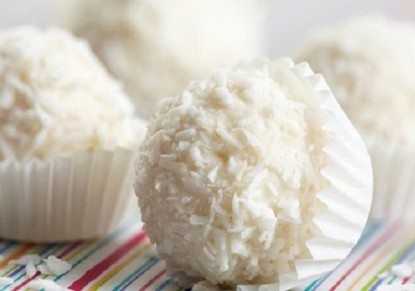

تارت ﺑﺎﻟﻔﺮاوﻟﺔ واﻟﻘﺸﻄﺔ

المقادير
ﻓﺘﻨﯿﻼ , رﺷﺔ ﻗﺸﺮ ﻟﯿﻤﻮن ﺣﺎﻣﺾ , 1 ﺣﺒﺔ ﺳﻜﺮ , 1/2 ﻛﻮب ﺑﯿﺾ , 3 ﺣﺒﺔ دﻗﯿﻖ ذرة , 1/4 ﻛﻮب ﺣﻠﯿﺐ , 2 ﻛﻮب اﻟﻜﺮﻳﻤﺎ , ﻓﺮاوﻟﺔ , 1/2 ﻛﯿﻠﻮ ﻓﺎﻧﯿﻼ , رﺷﺔ ﺳﻜﺮ ﻧﺎﻋﻢ , 3/4 ﻛﻮب ﺑﯿﺾ , 1 ﺣﺒﺔ زﺑﺪة ﺑﺪرﺟﺔ ﺣﺮارة اﻟﻐﺮﻓﺔ , 1 ﻛﻮب دﻗﯿﻖ , 2 ﻛﻮب
طريقة التحضير
ﻳﺨﻠﻂ اﻟﺪﻗﯿﻖ ﻣﻊ اﻟﺴﻜﺮ واﻟﺰﺑﺪة واﻟﻔﺎﻧﯿﻼ ﻓﻲ ﺧﻼط اﻟﻄﻌﺎم ﻟﻠﺤﺼﻮل ﻋﻠﻰ
ﻣﺰﻳﺞ ﻗﺸﺪي.
ﺗﻀﺎف اﻟﺒﯿﻀﺔ وﻳﺘﺎﺑﻊ اﻟﺨﻠﻂ ﻟﻠﺤﺼﻮل ﻋﻠﻰ ﻋﺠﯿﻨﺔ ﻣﺘﻤﺎﺳﻜﺔ ﻓﻲ زاوﻳﺔ
واﺣﺪة ﻣﻦ وﻋﺎء اﻟﺨﻼط.
ﺗﻠﻒ اﻟﻌﺠﯿﻨﺔ ﺑﻮرق اﻟﻨﺎﻳﻠﻮن اﻟﻼﺻﻖ وﺗﺤﻔﻆ ﻓﻲ اﻟﺜﻼﺟﺔ ﻟﻤﺪة ﺳﺎﻋﺔ أو
ﺳﺎﻋﺘﯿﻦ.
ﻳﺮش اﻟﻘﻠﯿﻞ ﻣﻦ اﻟﺪﻗﯿﻖ ﻓﻮق ﺳﻄﺢ طﺎوﻟﺔ اﻟﻌﻤﻞ وﺗﻮﺿﻊ ﻋﻠﯿﻪ اﻟﻌﺠﯿﻨﺔ
ﺛﻢ ﺗﻐﻄﻰ ﺑﻮرﻗﺔ ﻧﺎﻳﻠﻮن وﺗﺮق اﻟﻌﺠﯿﻨﺔ ﺑﺎﻟﺸﻮﺑﻚ ﻟﻠﺤﺼﻮل ﻋﻠﻰ داﺋﺮة ﻛﺒﯿﺮة
ﺳﻤﺎﻛﺘﮫﺎ ﻧﺼﻒ ﺳﻨﺘﯿﻤﺘﺮ.
ﺗﻘﻄﻊ داﺋﺮة اﻟﻌﺠﯿﻦ ﺑﻮاﺳﻄﺔ ﻗﻄﺎﻋﺔ اﻟﺒﺴﻜﻮﻳﺖ أو ﻛﻮب زﺟﺎﺟﻲ إﻟﻰ دواﺋﺮ
ﻗﻄﺮھﺎ ٨ إﻟﻰ ١٠ ﺳﻢ.
ﺗﻮﺿﻊ اﻟﺪواﺋﺮ ﻓﻲ ﻗﻮاﻟﺐ ﺗﺎرت ﻓﺮدﻳﺔ وﺗﻮﺧﺰ ﺑﺎﻟﺸﻮﻛﺔ ﺛﻢ ﺗﺤﻔﻆ ﻓﻲ ﻗﺴﻢ
اﻟﺘﺠﻠﯿﺪ ﻣﻦ اﻟﺜﻼﺟﺔ ﻟﻤﺪة ﺳﺎﻋﺔ.
ﻳﺤﻤﻰ اﻟﻔﺮن ﻟﻐﺎﻳﺔ ٣٥٠ درﺟﺔ ﻓﮫﺮﻧﮫﺎﻳﺖ وﺗﺨﺒﺰ ﻓﯿﻪ ﻗﻮاﻟﺐ اﻟﺘﺎرت ﺣﺘﻰ
ﺗﺼﺒﺢ وردﻳﺔ اﻟﻠﻮن.
ﺗﺨﺮج ﻗﻮاﻟﺐ اﻟﺘﺎرت ﻣﻦ اﻟﻔﺮن وﺗﺘﺮك ﻟﺘﺒﺮد
.
ﺗﺤﺸﻰ ﻗﻮاﻟﺐ اﻟﺘﺎرت اﻟﻤﺨﺒﻮزة ﺑﺎﻟﻜﺮﻳﻤﺎ ﺛﻢ ﺗﺰﻳﻦ ﺑﺎﻟﻔﺮاوﻟﺔ وﺗﺪھﻦ ﺑﻤﺮﺑﻰ
اﻟﻤﺸﻤﺶ.
ﺗﺤﻔﻆ ﻗﻄﻊ اﻟﺘﺎرت ﻓﻲ اﻟﺜﻼﺟﺔ ﺣﺘﻰ ﻣﻮﻋﺪ اﻟﺘﻘﺪﻳﻢ.
ﺗﺤﻀﯿﺮ اﻟﻜﺮﻳﻤﺎ
ﻳﺴﺨﻦ اﻟﺤﻠﯿﺐ ﻓﻲ ﻗﺪر ﻋﻠﻰ اﻟﻨﺎر ﻣﻊ ﻗﺸﺮة اﻟﻠﯿﻤﻮﻧﺔ.
ﻳﺨﻔﻖ دﻗﯿﻖ اﻟﺬرة ﻣﻊ اﻟﺒﯿﺾ واﻟﺴﻜﺮ واﻟﻔﺎﻧﯿﻼ.
ﺗﺮﻓﻊ ﻗﺸﺮة اﻟﻠﯿﻤﻮن ﻣﻦ اﻟﺤﻠﯿﺐ اﻟﺴﺎﺧﻦ وﺗﻄﻔﺄ اﻟﻨﺎر، ﺛﻢ ﻳﻀﺎف اﻟﺤﻠﯿﺐ
إﻟﻰ اﻟﺒﯿﺾ ودﻗﯿﻖ اﻟﺬرة واﻟﻔﺎﻧﯿﻼ واﻟﺴﻜﺮ.
ﻳﺤﺮك اﻟﻤﺰﻳﺞ ﺟﯿﺪاً ﺛﻢ ﻳﻌﺎد إﻟﻰ اﻟﻨﺎر وﻳﻄﮫﻰ ﺣﺘﻰ ﻳﻐﻠﻲ وﻳﺘﻜﺜﻒ.
ﺗﺮﻓﻊ اﻟﻘﺪر ﻋﻦ اﻟﻨﺎر وﺗﺘﺮك ﻟﺘﺒﺮ
ﺗﺮاﻓﻞ ﺟﻮز اﻟﮫﻨﺪ
المقادير
حب هالﺟﻮز ھﻨﺪ ﻣﺒﺸﻮر , 1/2 1 ﻛﻮب ﺣﻠﯿﺐ ﻣﻜﺜﻒ ﻣﺤﻠﻰ , 1/3 ﻛﻮب ﺷﻮﻛﻮﻻﺗﻪ ﻟﻠﺘﻌﻄﯿﺔ
طريقة التحضير
ﻓﻲ ﺑﻮﻟﻪ ، ﻧﺨﻠﻂ ﺟﻮز اﻟﮫﻨﺪ ﻣﻊ اﻟﺤﻠﯿﺐ اﻟﻤﻜﺜﻒ اﻟﻤﺤﻠﻲ ﺟﯿﺪا .
ﻧﺸﻜﻠﮫﺎ ﻋﻠﻲ ﺷﻜﻞ ﻛﺮات ﺻﻐﯿﺮة ..
ﺗﻮﺿﻊ ﻓﻲ طﺮق ﺑﻪ ﺟﻮز ھﻨﺪ ﻣﺒﺸﻮر ﻟﯿﻐﻄﯿﮫﺎ ﻛﻠﯿﺎ .
أو ﻧﺪوب اﻟﺸﯿﻜﻮﻻﺗﻪ ﻓﻲ ﺣﻤﺎم ﻣﺎء ﻣﻐﻠﻲ ، و ﻧﻀﻊ ﺑﻪ اﻟﻜﺮات و ﻧﻐﻄﯿﮫﺎ
ﺑﺎﻟﺸﯿﻜﻮﻻﺗﻪ ، و ﺗﺮص ﻋﻠﻲ ورق ﺧﺒﺰ و ﺗﻮﺿﻊ ﺑﺎﻟﺜﻼﺟﻪ ﺣﺘﻲ ﺗﺠﻤﺪ
اﻟﺸﯿﻜﻮﻻﺗﻪ .
و ﺗﻘﺪم
ﻛﺐ ﻛﯿﻚ اﻷورﻳﻮ
المقادير
ﻛﺮﻳﻤﺔ ﻣﺨﻔﻮﻗﺔ , 2 ﻛﺄس ﻟﺒﻦ , 1.50 ﻛﺄس ﺑﯿﺾ , 4 ﺣﺒﺔ ﻓﺎﻧﯿﻼ , 2 ﻣﻠﻌﻘﺔ ﺻﻐﯿﺮة ﺳﻜّﺮ ﺑﻨﻲ , 2 ﻛﺄس زﺑﺪة , 1.50 أﺻﺒﻊ ﻣﻠﺢ , 0.50 ﻣﻠﻌﻘﺔ ﺻﻐﯿﺮة ﺑﯿﻜﻨﺞ ﺑﺎودر , ﻣﻠﻌﻘﺔ ﺻﻐﯿﺮة ﺷﻮﻛﻼﺗﻪ ﺑﻮدرة ﻣﺮّة, ﻛﺄس دﻗﯿﻖ , 2.50 ﻛﺄس ﺳﻜﺮ ﺑﻮدرة , 3 ﻣﻠﻌﻘﺔ ﻛﺒﯿﺮة أورﻳﻮ ﻣﻜّﺴﺮ, 6 ﻣﻠﻌﻘﺔ ﻛﺒﯿﺮة أورﻳﻮ أﻧﺼﺎف, 20 ﺣﺒﺔ
طريقة التحضير
- أﺧﻠﻄﻲ اﻟﺪﻗﯿﻖ واﻟﺸﻮﻛﻮﻻﺗﻪ اﻟﺒﻮدرة واﻟﻤﻠﺢ واﻟﺒﺎﻛﯿﻨﺞ ﺑﺎودر وأﺗﺮﻛﯿﮫﻢ
ﺟﺎﻧﺒﺎً.
- أﺧﻠﻄﻲ اﻟﺰﺑﺪة ﺣﺘﻰ ﺗﺼﺒﺢ ﻧﺎﻋﻤﺔ ﺛﻢ أﺿﯿﻔﻲ إﻟﯿﮫﺎ اﻟﺴﻜﺮ اﻟﺒﻨﻲ
وأﺧﻠﻄﯿﻪ ﺣﺘﻰ ﻳﺼﺒﺢ اﻟﺨﻠﯿﻂ ﻛﺮﻳﻤﯿﺎً ﺑﻌﺪ ھﺬا أﺿﯿﻔﻲ اﻟﺒﯿﺾ واﺣﺪة ﺑﻌﺪ
اﻷﺧﺮى وأﺧﻠﻄﯿﮫﻢ ﺑﺎﻟﺨﻔﺎﻗﺔ اﻟﻜﮫﺮﺑﺎﺋﯿﺔ.
- أﺿﯿﻔﻲ اﻟﻔﺎﻧﯿﻼ وﻗﻠﻠﻲ ﺳﺮﻋﺔ اﻟﺨﻼط.
- ﺛﻢ أﺿﯿﻔﻲ ﺧﻠﯿﻂ اﻟﺪﻗﯿﻖ ﻋﻠﻰ دﻓﻌﺎت ﺑﺎﻟﺘﻨﺎوب ﻣﻊ اﻟﻠﺒﻦ ﺑﻌﺪ ھﺬا ﺻﺒﻲ
اﻟﺨﻠﯿﻂ ﻓﻲ ورق اﻟﻜﺐ ﻛﯿﻚ ﻓﻲ ﺻﯿﻨﯿﺔ اﻟﻜﺐ ﻛﯿﻚ وأﺧﺒﺰﻳﻪ ﺗﻘﺮﻳﺒﺎً ﻟـ 20
دﻗﯿﻘﻪ ﻋﻠﻰ درﺟﺔ 180 ﻣﺌﻮﻳﺔ.
- أﺗﺮﻛﻲ ﻛﺐ ﻛﯿﻚ اﻷورﻳﻮ ﻟﯿﺒﺮد، واﺳﺘﻌّﺪي ﻟﺘﺰﻳﯿﻨﻪ.
ﻟﻠﺘﺰﻳﯿﻦ:
- ﻧﺨﻠﻂ ﻛﺮﻳﻤﺔ اﻟﺨﻔﻖ واﻟﺴﻜﺮ اﻟﺒﻮدرة ﺛﻢ ﻧﻀﯿﻒ ﻟﮫﺎ اﻷورﻳﻮ اﻟﻤﻜّﺴﺮ
وﻧﺨﻠﻂ ﺑﺎﻟﻤﻠﻌﻘﺔ.
- ﻧﺸﻜﻠﮫﺎ ﺑﺎﻟﻘﻤﻊ ﻓﻮق اﻟﻜﺐ ﻛﯿﻚ وﻧﻐﺮس ﻓﯿﻪ ﻧﺼﻒ ﺣﺒﺔ أورﻳﻮ